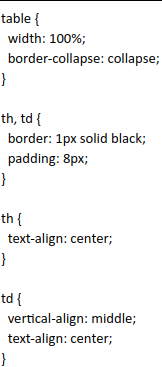

El LOL es un juego de estrategia
"


| Etiqueta o atributo obsoleto | Pertenece a... | Descripción | Alternativa actual | Ejemplo (Con la alternativa actual si tiene o con la obsoleta en su defecto) |
|---|---|---|---|---|
| applet | No aplica | Un applet es un programa, componente o aplicación que se ejecuta dentro del contexto de otro programa o aplicación escrito en JAVA. | object | recurso externo, que puede ser tratado como una imagen, un contexto de navegación anidado, o como un recurso que debe ser manejado por un complemento. |
| acronym | No aplica | se utilizaba en HTML para definir un acronimo o abreviar palabras en el contenido web | abbr |
" El LOL es un juego de estrategia " |
| vlink | < body > | "vlink este es un atributo de html que ya no se utliza se considera obsoleto se utilizaba para cambiar el color a los enlaces visitados aquellos que el usuario habia ingresado previamente" | "en lugar de usar ese atributo se se recomienda definir los estilos de enlace en CSS puede usarse con el pseudo-clase:visited " | |
| bgcolor | < body > | es usado para determinar el color de fondo de un párrafo, tabla o cualquier otra parte del HTML. Es recomendable el uso moderado de esta etiqueta. También es recomendable establecer los colores de fondo y los estilos de texto o links, con la ayuda de CSS. Explicaremos con mas detalles cómo puede hacerse eso en un tutorial CSS posterior. Explicaremos con mas detalles cómo puede hacerse eso en un tutorial CSS posterior." | "En lugar de usar el bgcolor, es recomendable usar el background" | |
| align, valign | < table > | Las etiquetas "align" y "valign" se utilizan en HTML para alinear el contenido dentro de una tabla | Este atributo es obsoleto ya que se considera mejor manipular las tablas con CSS |  |
| hspace, vspace | < table > < iframe > | Indica espacios en tablas/marcos. hspace de forma horizontal y vspace de manera vertical. | CSS: modelo de cajas | |
| allowtransparency | < iframe > | |||
| frameborder | < iframe > | Puedes poner un borde al marco iframe | utilizar css | |
| scrolling | < iframe > | Usando este atributo podemos controlar la aparición o no de barras de desplazamiento. Los valores que puede tomar: AUTO, YES, NO | Overflow de CSS | |
| align, border | < img > < table > | |||
| cellspacing | < table > | Es mejor usar los estilos CSS desde un archivo para mas control | CSS | |
| cellpadding | < table > | |||
| nowrap | td th | EL atributo "nowrap" evitaba que el contenido de la celda se ajustara automáticamente para encajar dentro del ancho de la celda. | CSS | |